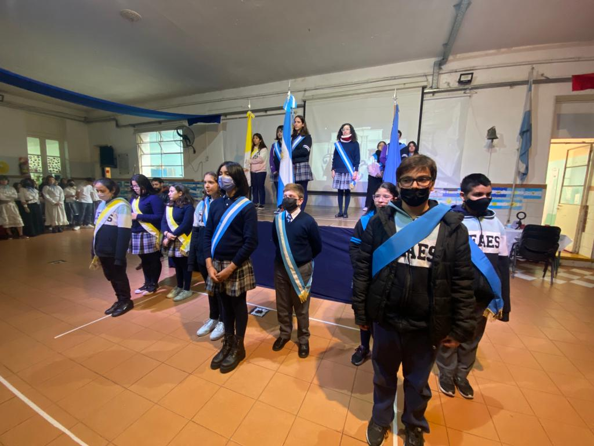
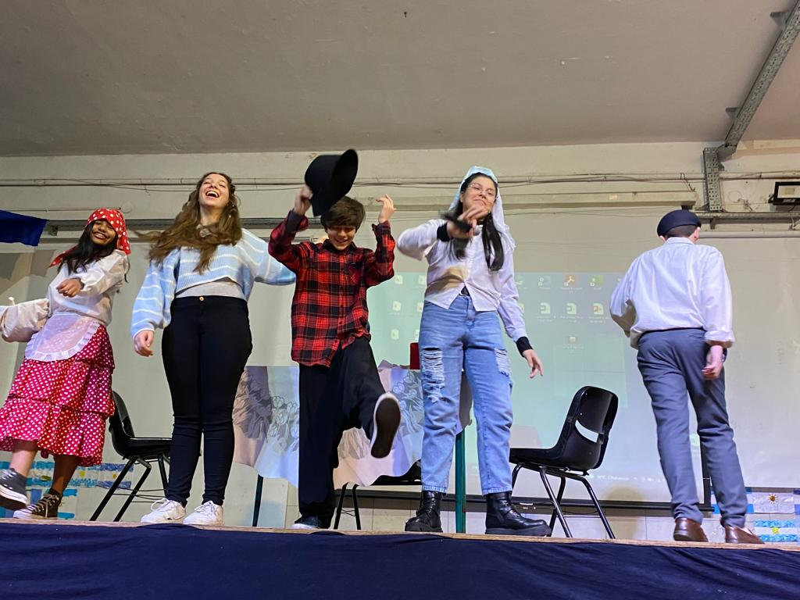
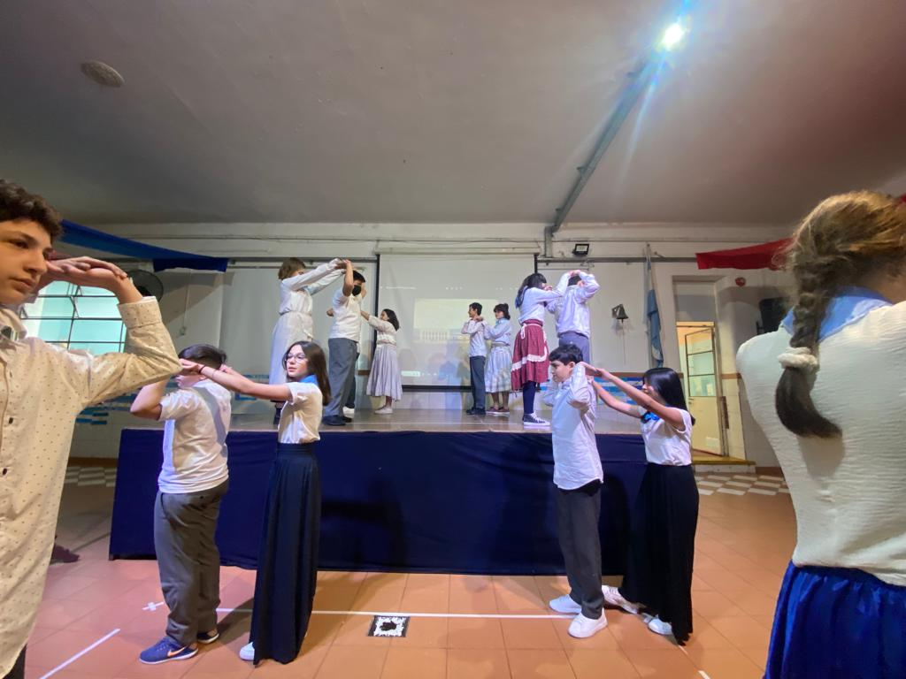

Acto 9 de Julio
AsÍ fue el acto del Día de la Independencia en el CEAES en el 2022 Por María López Arrospide de 1ro B
El 9 de julio de 1816 se celebra la independencia de Argentina. Esto sucedió en la
ciudad de San Miguel de Tucumán, se firmó el acta de Independencia que rompía los lazos de subordinación al gobierno
español. Desde ese momento, los argentinos festejan la libertad que tiene nuestra Nación. Este día tan
esperado por los habitantes, deciden conmemorarlo comiendo empanadas de carne, locro, pastelitos de
membrillo, entre otras. Las escuelas, por lo tanto, deciden hacer actos para que los alumnos conozcan
la historia de nuestra patria.
El 11 de julio, el CEAES hizo un acto para que los alumnos aprendan, se diviertan y compartan con todos
los miembros de la comunidad escolar. En el mismo, el profesor Fernando Fariña explicó qué se conmemoraba
el 9 de julio. Luego del emotivo relato, pasaron las banderas de ceremonia: bandera de Argentina, bandera
Papal y bandera del Instituto. En ese momento, pusieron el Himno Nacional Argentino. Los profesores, alumnos
y familiares, cantaron esta canción que nos representa. Finalizado el Himno, pasó una chica representando a
todo su curso. Fue una de 7mo grado y una de 1er año, a explicar qué significaba para ellos la palabra PATRIA.
Luego de eso, dijo unas palabras Sandra Signorelli desde lo profundo de su corazón que dejó a todos anonadados.
Cada palabra de ella, conmovió el alma de los presentes. Luego de eso, Fariña explicó lo que se venía : una
actuación dirigida por Gabriel Praticól. Los actores eran de 7mo grado y 1er año: Bárbara Marcano, Lautaro
Galindo, Agustina Villareal, Angeles de Urquiza y Benjamin Silva. Se trataba sobre una familia de la época de 1816.
Donde un señor se topó con una vendedora de velas, la chica le contó una noticia y ambos se pusieron felices; El
señor fue a comunicarle a su familia que se DECLARARA LA INDEPENDENCIA!!.
Luego, se presenció el pericón, un baile que representa a la Argentina. Esta danza la bailaron los alumnos de los
dos 7mos y de los dos 1eros. Fue un baile muy emotivo, ya que, a varios parientes presentes les recordó a sus infancias
cuando lo conmemoraban en sus escuelas.
Después del baile, dieron por finalizado el acto. El Rector de secundaria Ricardo Barboza y la directora de primaria
Marita Brdón Videla, dieron una opinión personal. Mi opinión es que el acto nos ayudó a saber nuestra historia y a conmemorar
a la Argentina tal cual como fue, es y será. Cada palabra de los profesores nos conmovieron y nos hicieron reflexionar.
Tal como los expresó una profesora, “la libertad es tan única y algo de lo que tenemos que estar orgullosos por lo que pudimos
lograr y tenemos que seguir luchando para nunca perderla”.


